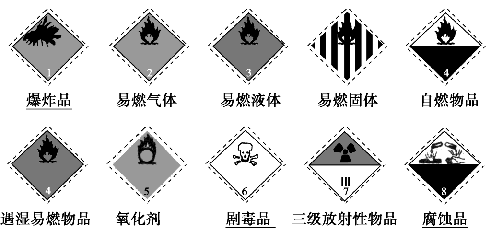

化学实验基本方法
§1 化学实验基本方法¶
概述¶
遵守实验室规则
取用药品“三不原则”：不能用手直接接触药品；不要把鼻孔凑到容器口去闻药品的气味；不得尝任何药品的味道
用剩的药品“三不原则”：不能放回原瓶；不要随意丢弃；不能拿出实验室
化学标志¶

药品的存放¶
广口瓶：固体药品
细口瓶：液体药品
棕色试剂瓶：见光易分解、易升华等
橡胶塞：碱性药品（液体）
玻利塞：酸性药品（液体）
软木塞（万能塞）：酸碱均可
煤油：活泼金属
药品的取用¶
固体药品¶
粉末：药匙（纸槽），一斜二送三直立
块状固体：镊子，一横二放三慢滑
一定量：托盘天平
液体药品¶
少量：胶头滴管，不横放、不平放、用后洗净
多量：用试剂瓶倾倒，标签朝手心
一定量：量筒（精度0.1mL）、滴定管
计量仪器¶
托盘天平¶
调零，左物右码，一般固体放在纸上，腐蚀性药品（ NaOH ） 放在玻璃器皿上，用镊子取砝码，精确度0.1g
量筒¶
无零刻度，精确度0.1mL
容量瓶¶
坑
滴定管¶
坑
物质加热方法¶
酒精灯¶
添加酒精时，酒精不超过容积的 \frac{2}{3} ，不少于 \frac{1}{3}
绝对禁止向燃着的酒精灯里添加酒精，以免失火
绝对禁止用酒精灯引燃另一只酒精灯，要用火柴点燃
用完酒精灯，必须用灯帽盖灭，不可用嘴去吹，要盖两次平衡气压
不要碰倒酒精灯，万一洒出的酒精在桌上燃烧起来，应立即用湿布或沙子扑盖
请勿将酒精灯的外焰受到侧风，一旦外焰进入灯内，将会爆炸
仪器加热¶
先干燥仪器，先预热再局部加热，使用外焰加热
可直接加热的仪器：试管、坩埚、坩埚钳、蒸发皿、燃烧匙
需间接加热（隔网）的仪器：烧杯、烧瓶、锥形瓶
不能加热的仪器：量筒、容量瓶
其它¶
仪器组装¶
从下到上，从左到右（拆的顺序与之相反）
气体收集方法¶
排水集气法：适用于不溶于水、不与水反应的气体
向上（下）排空气法：适用于密度大（小）于空气的气体